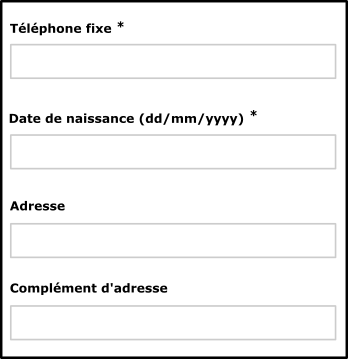
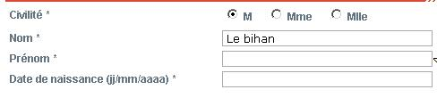
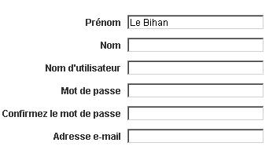
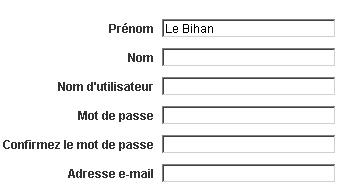

Associer une étiquette pertinente à chaque champ de formulaire
Cible : tout le monde, et en particulier les personnes déficientes visuelles et cognitives, avec un déficit d’attention et les utilisateurs de tactiles (mobile et tablette).
Quand : lors de la conception et lors du développement.
Description :
Chaque champ de formulaire doit être accompagné d’un libellé ou d'instructions permettant d’identifier le rôle du champ, le type de donnée et le format attendu.
Ces informations doivent être proches visuellement du champ afin que l'utilisateur fasse facilement le lien entre eux (notamment pour les utilisateurs de zoom, de loupe logicielle, voire sur mobile).
Chaque libellé (ou instructions) doit être inclus dans une balise label, elle-même associée au champ de formulaire grâce à un attribut for renseigné, reprenant la valeur de l’id du champ.
Dans certains cas, il semble inutile d’accompagner le champ de formulaire d’un libellé (champ de recherche accompagné d’un bouton en forme de loupe par exemple). Dans ce cas, prévoir tout de même un libellé, l’associer au champ de formulaire et le rendre invisible à l’écran (utiliser une classe de masquage accessible), ainsi celui-ci sera quand même vocalisé par les lecteurs d’écran.
L’attribut title positionné sur une balise de champ de formulaire peut faire également office de libellé tout comme les attributs aria-label et aria-labelledby (cf. les attributs ARIA qui peuvent vous sauver) dans cet ordre de préférence.
L'attribut autocompleted doit être présent et pertinent pour tous les champs listés dans 7. Input Purposes for User Interface Components.
À vérifier :
S’assurer que le libellé du champ (étiquette) est suffisamment proche du champ associé.
Aligner tous les libellés à gauche lorsque le nombre de caractères séparant le libellé le plus long de celui le plus court ne dépasse pas 6 caractères ; au-delà, aligner tous les libellés à droite.
Si cela est pertinent, les champs ont un attribut autocompleted afin que l’utilisateur ait la possibilité d’utiliser une liste de propositions pré-enregistrées ou en auto-complétion.
Pour les boutons radio et les cases à cocher, l’utilisation de la balise label est, parfois, à compléter par un autre dispositif (title, aria-labelledby, aria-label ou parfois, fieldset et legend).
Pour les champs obligatoires, ceci doit être précisé dans le label via une image, un symbole texte (* par exemple) ou du texte et/ou une propriété aria-required.
Objectif utilisateur :
Ne pas respecter ces recommandations est un point bloquant pour tout utilisateur de synthèse vocale mais aussi de loupe logicielle car il ne sait pas quelles valeurs entrer dans les champs. Pour les utilisateurs de mobiles et les déficients moteurs, cela permet d’activer ou de cliquer plus facilement sur les éléments de formulaire.
Pour les champs avec auto-complétion, facilite la tâche aux déficients moteur et cognitif, les dyslexiques. Cela permet d’éviter les erreurs de saisie et un gain de temps pour tous.
Exemple valide :


Exemple non-valide : 

Exemple de formulaire accessible :
Consulter l’exemple de formulaire accessible pour plus d’informations.
Référence WCAG :